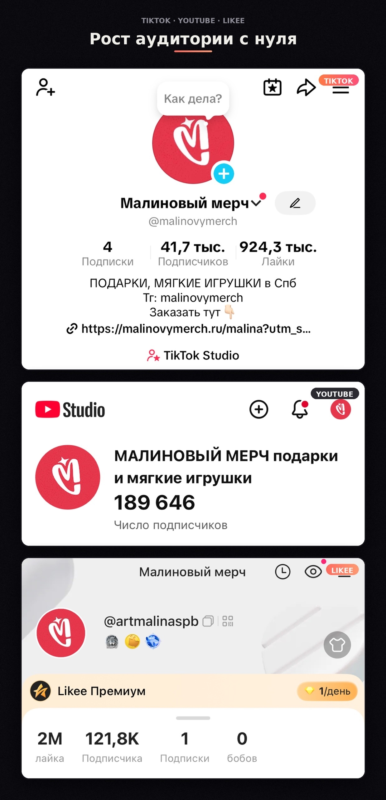
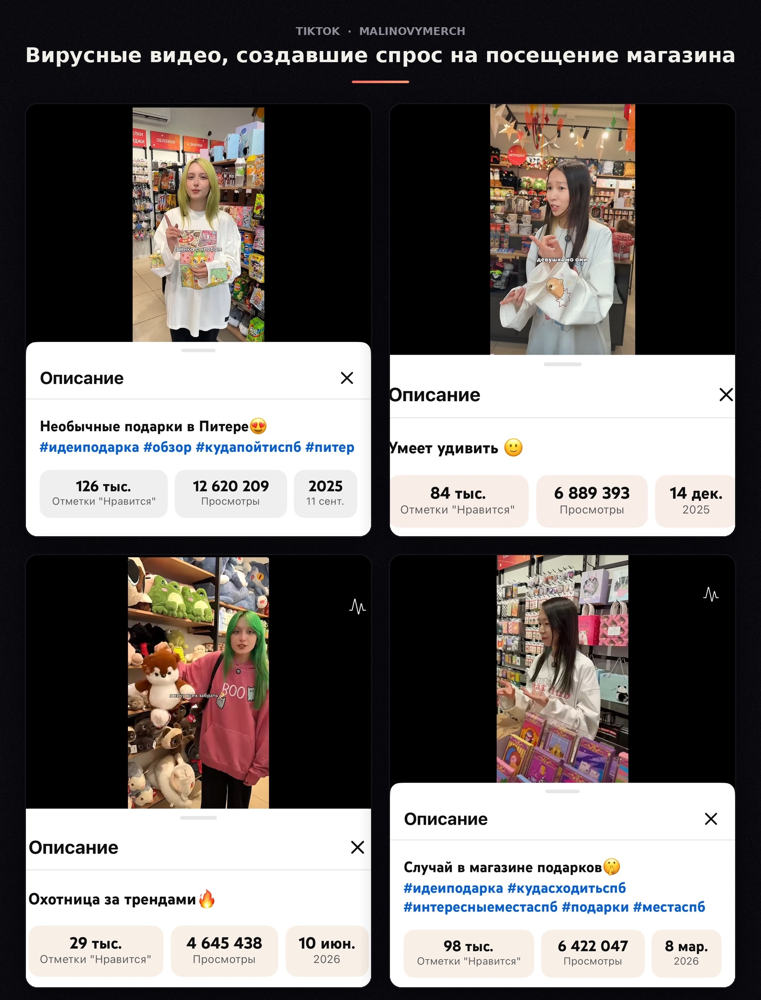
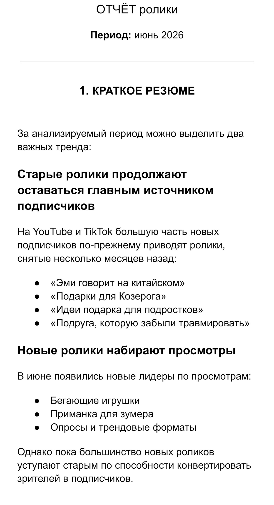

За период работы бренда аудитория социальных сетей выросла до 300 тыс.+, а отдельные видео набирали миллионы просмотров.
Я не производила вирусные видео самостоятельно — производство видео было работой контент-мейкера / reelsmaker. Моя зона ответственности:


